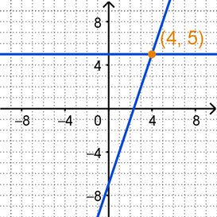
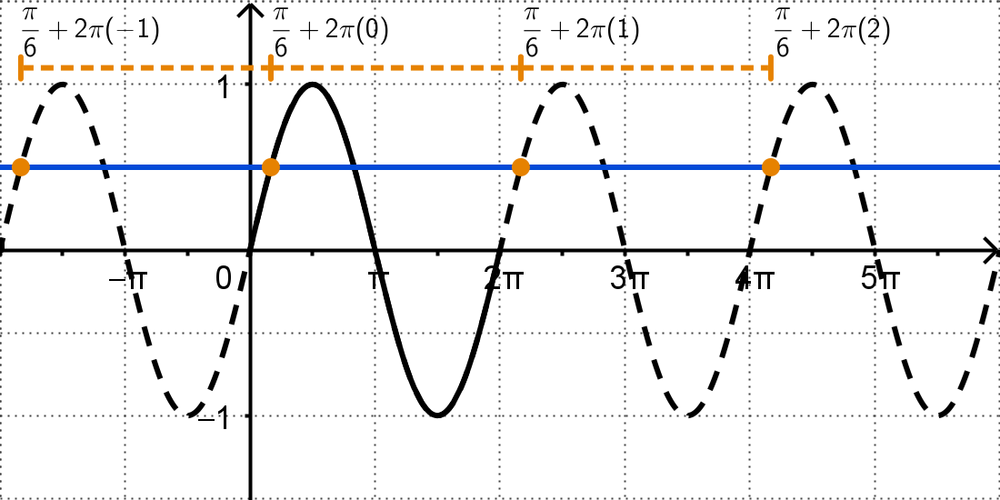
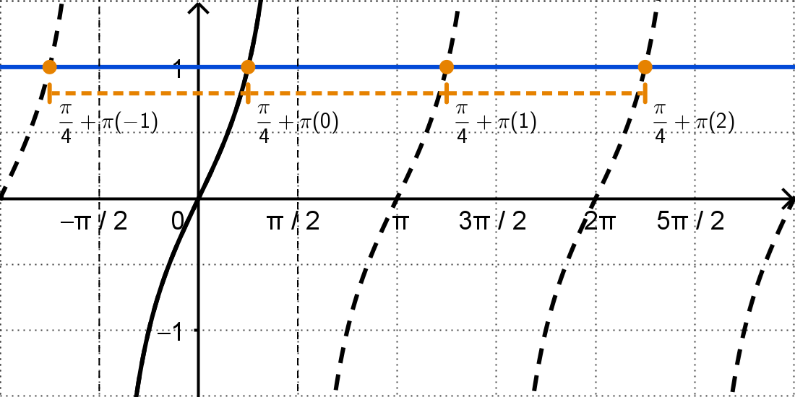

Solving Trigonometric Equations
Trigonometric Equations
Trigonometric Equations
Before we dig into the algebraic processes to solve trigonometric equations, let's spend a few minutes looking at the bigger picture (pun intended) to better understand conceptually what our solutions will look like. When solving equations graphically, we normally want to look for any intersections on the graph. For example, to solve the equation \(5 = 3x - 7\) graphically, we could graph the functions \(y = 5\) and \(y = 3x - 7\) and find their intersecton at the point \((4,5)\), as illustrated below. So the solution to the equation \(5 = 3x - 7\) would be \(x = 4\).
We can use the same strategy when solving trigonometric equations, but we have two ways of looking at our trig functions, either via the unit circle or as their function graphs. These two methods are illustrated in the following examples.
Example #1: Solve the following equations graphically.
\[\sin(x) = \frac{1}{2}\]There are a couple ways that we can think about solving \(\sin(x) = \frac{1}{2}\). One method is to reference the unit circle and look for any angles where the terminal points on the unit circle have a \(y\)-coordinate of \(\frac{1}{2}\). These points on the unit circle will be in the 1st and 2nd quadrants (where sine is positive) at the angles of \(\frac{\pi}{6}\) and \(\frac{5\pi}{6}\). Another method is to think of sine as the function \(y = \sin{x}\) and then look for where \(y = \sin{x}\) intersects the line \(y = \frac{1}{2}\). This is illustrated on the second graph, which notes the intersections at \(x = \frac{\pi}{6}\) and at \(x = \frac{5\pi}{6}\). Using either method, we can conclude that the solution to the equation \(\sin(x) = \frac{1}{2}\) is \(x = \frac{\pi}{6}\) and at \(x = \frac{5\pi}{6}\) on the interval \([0,2\pi)\).
Why on the interval \([0, 2\pi)\)? Because that is equivalent to one revolution around the unit circle. It is also the standard 1-period graph of \(y = \sin{x}\). But remember, we can revolve around the unit circle an unlimited amount of times in either the counterclockwise \((+)\) or clockwise \((-)\) directions. Similarly, the graph of \(y = \sin{x}\) extends forever in both the \(x \rightarrow -\infty\) and \(x \rightarrow \infty\) directions. That means there are are actually infinitely many solutions to this equation, 2 each time we rotate around the unit circle or travel a distance of \(2\pi\).
Consider the following graph. In addition to the solution \(x = \frac{\pi}{6}\) on the \([0, 2\pi)\) part of the graph, we can also see other solutions at \(\frac{-11\pi}{6}\), \(\frac{13\pi}{6}\), and \(\frac{25\pi}{6}\). All four of these values are coterminal to each other, which means that each solution will be the sum of \(\frac{\pi}{6}\) and a multiple of \(2\pi\).
These first 4 solutions marked on the graph above have been expressed as \(\frac{\pi}{6}\) plus an integer multiple of \(2\pi\). They are also listed below, along with the simplified result.
Since we can continue adding multiples of \(2\pi\) forever, we abbreviate the infinitely many solutions as \(x = \frac{\pi}{6} + 2\pi k\) were \(k\) is any integer (the integers are \(...,-3, -2, -1, 0, 1, 2, 3, ...\)). We could do the same thing for the solution \(x = \frac{5\pi}{6}\).
So, the solution of the equation \(\sin(x) = \frac{1}{2}\) is \(x = \frac{\pi}{6} + 2\pi k, \frac{5\pi}{6} + 2\pi k\), with the specific values \(x = \frac{\pi}{6}, \frac{5\pi}{6}\) on the interval \([0, 2\pi)\).
Example #2: Solve the following equations graphically. List any solutions on the interval \([0,2\pi)\).
\[\cos(x) = -\frac{\sqrt{2}}{2}\]We can approach this equation in much the same way as the previous example. The first graph below illustrates that to solve \(\cos(x) = -\frac{\sqrt{2}}{2}\), we want to find the points on the unit circle where the \(x\)-coordinate is \(-\frac{\sqrt{2}}{2}\). These points on the unit circle will be in the 2nd and 3rd quadrants (where cosine is negative) at the angles of \(\frac{3\pi}{4}\) and \(\frac{5\pi}{4}\). The second graph below illustrates that we can also think about finding where the cosine function \(y = \cos{x}\) intersects the line \(y = -\frac{\sqrt{2}}{2}\), which happens at \(x = \frac{3\pi}{4}\) and at \(x = \frac{5\pi}{4}\). Using either method, we can conclude that the solution to the equation \(\cos(x) = -\frac{\sqrt{2}}{2}\) is \(x = \frac{3\pi}{4}\) and at \(x = \frac{5\pi}{4}\) on the interval \([0,2\pi)\).
Just like we saw in the previous example, there will be infinitely many answers as we revolve around the unit circle or extend forever in the \(x \rightarrow -\infty\) and \(x \rightarrow \infty\) directions. Since the standard 1-period interval for \(y = \cos{x}\) is also \([0, 2\pi)\), we can express these infinitely many solutions in the same way, by adding integer multiples of \(2\pi\) to our initial solutions.
So, the solution of the equation \(\cos(x) = -\frac{\sqrt{2}}{2}\) is \(x = \frac{3\pi}{4} + 2\pi k, \frac{5\pi}{4} + 2\pi k\), with the specific values \(x = \frac{3\pi}{4}, \frac{5\pi}{4}\) on the interval \([0, 2\pi)\).
Example #3: Solve the following equations graphically. List any solutions on the interval \([0,2\pi)\).
\[\tan(x) = 1\]We can again follow a similar strategy when solving this equation. The first graph below illustrates that to solve \(\tan(x) = 1\), we want to find the points on the unit circle where the \(x\)- and \(y\)-coordinates are the same, making \(\frac{y}{x} = 1\). These points on the unit circle will be in the 1st and 3rd quadrants (where tangent is positive) at the angles of \(\frac{\pi}{4}\) and \(\frac{5\pi}{4}\). The second graph below illustrates that we can also think about finding where the tangent function \(y = \tan{x}\) intersects the line \(y = 1\), which happens at \(x = \frac{\pi}{4}\) and at \(x = \frac{5\pi}{4}\). Using either method, we can conclude that the solution to the equation \(\tan(x) = 1\) is \(x = \frac{\pi}{4}\) and at \(x = \frac{5\pi}{4}\) on the interval \([0,2\pi)\).
Once again, we need to account for the infinitely many solutions as we revolve around the unit circle an unlimited amount of times or the graph of \(y = \tan{x}\) extends forever in both the \(x \rightarrow -\infty\) and \(x \rightarrow \infty\) directions. However, this time there is going to be a small difference. By looking at the graph below, we can see that the consecutive solutions are each separated by a distance of \(\pi\), not \(2\pi\). This is because the standard 1-period interval of \(y = \tan{x}\) is \(\left(-\frac{\pi}{2}, \frac{\pi}{2}\right)\) which has a length of \(\pi\).
From the graph above, we can conclude that every solution will be the sum of \(\frac{\pi}{4}\) and an integer multiple of \(\pi\). Notice that our two original solutions \(x = \frac{\pi}{4}\) and \(x = \frac{5\pi}{4}\) are also a distance of \(\pi\) apart. This means that we don't need to explicitly write out both when expressing the infinitely many solutions. Writing the solution for the first value will, by nature of the tangent function, also include the second value.
So, the solution of the equation \(\tan(x) = 1\) is \(x = \frac{\pi}{4} + \pi k\), with the specific values \(x = \frac{\pi}{4}, \frac{5\pi}{4}\) on the interval \([0, 2\pi)\).
Let's summarize what we have seen in the above examples. When solving a trigonometric equation of the form \(\sin{x} = a\), \(\cos{x} = b\), or \(\tan{x} = c\), we want to find the correspond points on the unit circle whose \(x\) and/or \(y\) coordinates match the desired values. The angle (usually in radians) of these points will be the solution of the equation on the interval \([0, 2\pi)\). We can then express the infinitely many solutions to the equation by adding \(2\pi k\) for sine and cosine or \(\pi k\) for tangent.
©2025 M4thG33x (new window) Some Rights Reserved.